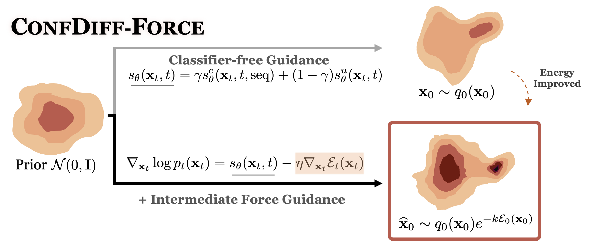
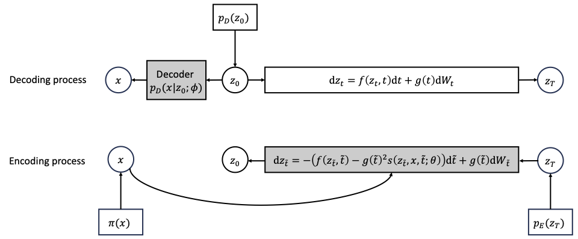
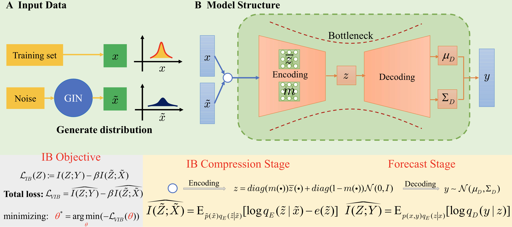
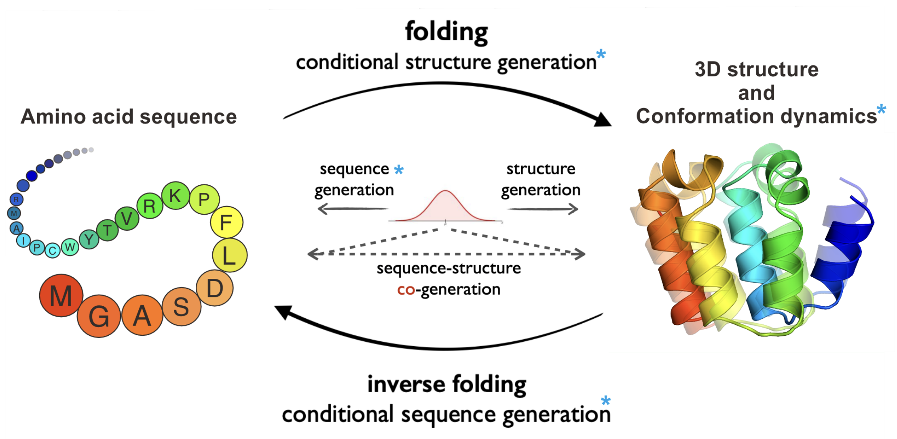

Yan Wang
About Me
I am a 4th year Ph.D. student at School of Mathematical Sciences from Tongji University, Shanghai, China. I am advised by Prof. Hao Wu. My research interests include AI for Science and machine learning.
Research Interests
- Sampling problems using deep learning methods: efficient sampling of high-dimensional distributions, molecular systems and complex physical systems
- Protein Conformations generation: using thermodynamic and kinetic information to generate protein conformations
Publications
-
 ICMLInternational Conference on Machine Learning 2024
-
 Under ReviewarXiv:2401.02080 2024
-
 JCPJournal of Computational Physics 2024
-
 Under Review
Powered by Jekyll and Minimal Light theme.